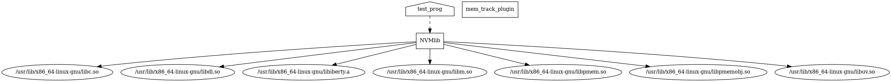

|
NVMLib
very early alpha
A library to optimally use a Hybrid RAM setup.
|
|
NVMLib
very early alpha
A library to optimally use a Hybrid RAM setup.
|
NVMLib is library to optimally use a Hybrid RAM setup. It is designed to resemble malloc in its features and interfaces. It is designed to have little to no input from the programmer regard the decision of where a perticular object needs to be placed.
Crash consistency:
We define a system crash consistent if all the objects in NVRAM which have not been freed have their state (i.e the value) persistent across runs. For instance:
if the program crashes before memfree is called, then the values in array have to be in the same state as the run which crashed even in the next run. But once memfree is called, the next run starts with the initial state (in this case with all values being 0).
Note that in the above example memalloc is given the optional argument of NVRAM_HEAP which tells the library to place the object in NVRAM. The current implementation of crash consistency is basic, it is capable of:
NVRAM across runs.NVRAM for their program to be crash consistent.As the next step in providing crash consistency, we will be implementing context aware movement of objects from DRAM to NVRAM, i.e the library will move any object that it deems necessary for crash consistency into NVRAM if it were in DRAM.
Movement of objects from DRAM to NVRAM and vice versa:
The library is capable of moving objects from NVRAM to DRAM an vice-versa, inorder to improve the performance and/or the energy consumption. At present the library is capable of moving objects but the algorithm to move the objects taking performance into account is not yet implemented. What we mean by movement of objects is: Consider the following example:
Here note that the memalloc has been given only the size argument, thus the library allocates the memory for the object in the RAM that it deems most suitable (it considers the size for making the decision). The LIB_D_RO and LIB_D_RW are the interfaces to read and write the object. These MACROS ensure that the data is always written and always the correct data is read. The reason why need these MACROs for access is because the object is moved from one RAM to another at runtime if the library thinks its good for the performance.
For instance, in the above example, assume that array was initially in DRAM. When the array is being initialised, it is doing a streaming write. Assume the library then decides that this variable is better if present in NVRAM and thus moves it (by freeing the DRAM location and allocating a new one in NVRAM). Now at printf the accessed location is no longer the DRAM one but it is the NVRAM one. This is the purpose that LIB_D_RO and LIB_D_RW serve.
Internally all the allocations are represented as a <MEMoidKey, MEMoid> pair. The MEMoidKEey is returned to the user program, which is used for access and the MEMoid contains the information about the memory location and the access pointer to the location can be extracted from it. <MEMoidKey, MEMoid> is maintained in a persistent hashtable and this is how we are able to provide crash consistency.
MEMoidKey is in essense a pointer at the library level. This key is unique to every single variable in the user code and that is how we can ensure an un-freed variable is not reallocated in the next run.
Everytime LIB_D_RO or LIB_D_RW (these take the LIB_TOID object as argument. LIB_TOID object contains the MEMoidKey) is used, they internal call an internal function which takes the MEMoidKey, obtains the MEMoid object from the hashtable and returns the translated memory access pointer. Since the accesses have to happen this way and since we ensure that the movement of objects are reflected in the <MEMoidKey, MEMoid> hashtable, we ensure the validity of access pointer (note that the pointers are generated just-in-time for the access). We also add certain thread synchronisation during accesses, using our gcc compiler Plugin (mem_track.cc) which solidifies validity of access pointer.
malloc from the 2nd runO(1)logistics thread or the deletion thread and hence do not add latency to the user program (running on the main thread). At the same time we ensure data integrity and also the returned "access-pointer's" validity.cd into the build directory and execute make Here export CC=<path to C compiler> export CXX=<path to C++ compiler> are optional, but recomended because cmake defaults to cc as the compiler.
Here we do cmake before make inorder to rebuild the Makefiles. This should be used when a additional files are added to the source code.
make VERBOSE=1After make the shared library file (libNVMlib.so) and the gcc-plugin (libmem_track_plugin.so) will be in build/ and the intermediate files (.i) will be in build/intermediate/.
The documentation for the source code has been generated using Doxygen. Open NVMLib/docs/html/index.html in a web browser to take a look at the documentation.

 1.8.18
1.8.18